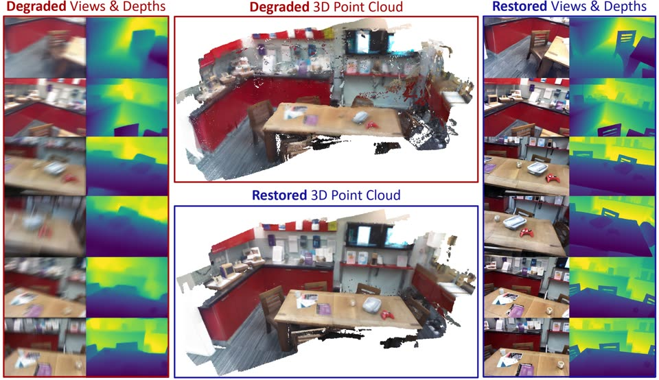
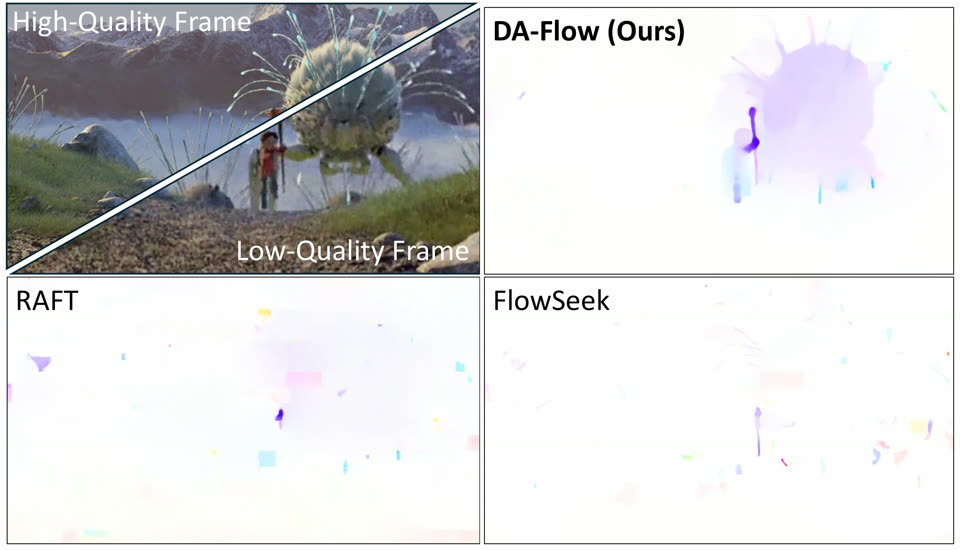
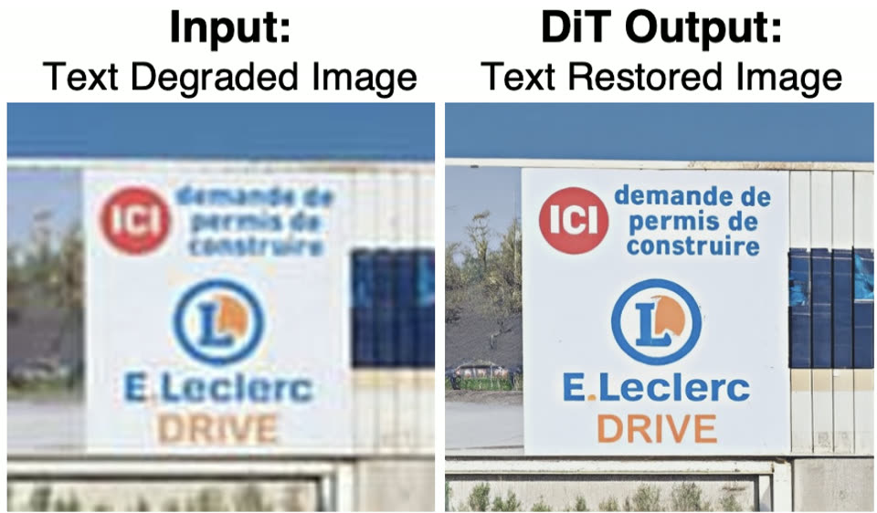

Paul Hyunbin Cho
M.S. Student, KAIST AI · Research Intern, Kakao
I am an M.S. student in Artificial Intelligence at KAIST, advised by Prof. Seungryong Kim, and a research intern at Kakao. I study controllable video generation: diffusion models that follow audio, text, or user actions while staying coherent over long sequences. I am working to extend this toward interactive world models.
Before KAIST, I received a B.S.E. in Computer Science and Engineering and a B.A. in American Culture from Sogang University.
Experience
Kakao
Mar 2026 – PresentResearch Intern · Seongnam, Korea
- Acceleration of audio-driven portrait animation with autoregressive video diffusion models Distilled an audio-driven portrait animation model into a few-step autoregressive video diffusion model for streaming generation.
- Latent compression for efficient video diffusion · GRACE Co-designed and evaluated GRACE, which compresses the latent space of a pretrained video autoencoder to 8× fewer tokens while keeping DiT compatibility; further step-distilled it into bidirectional and autoregressive few-step models, for a 117.7× total speedup over Wan2.1-I2V-14B.
News
- GRACE, generation-aware latent compression for efficient video generation, is on arXiv.
- GARD accepted to NeurIPS 2026.
- Lip Forcing, few-step autoregressive diffusion for real-time lip synchronization, is on arXiv.
- Deep Forcing accepted to ICML 2026.
- Joined Kakao as a research intern.
- TAIR accepted to ICLR 2026.
Publications
* equal contribution
-
GRACE: Generation-Aware Latent Compression for Efficient Video Generation
arXiv 2026 under review
-
Lip Forcing: Few-Step Autoregressive Diffusion for Real-time Lip Synchronization
arXiv 2026 under review
-

-
WorldKV: Efficient World Memory with World Retrieval and Compression
arXiv 2026 under review
-

DA-Flow: Degradation-Aware Optical Flow Estimation with Diffusion Models
arXiv 2026 under review
-
-

-
-
Efficient GNN-based Social Recommender Systems through Social Graph Refinement
The Journal of Supercomputing, 2024